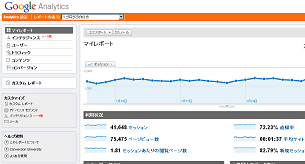
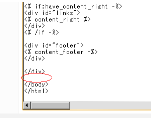

無料アクセス解析のグーグルアナリティクス
グーグルアナリティクス（Google Analytics）は、無料で利用できるグーグルのアクセス解析のことです。
無料ブログサービスに付属しているアクセス解析の場合、検索エンジンのクローラーなどの機械的なアクセスも計測してしまうため、正確な数値が反映されていないケースが多いです。
けれども、グーグルアナリティクスはJavaScriptによるものですので、ブラウザを利用している人間のアクセスしか計測されません。
アクセス解析のほか、サイト訪問者のトラフィックの傾向なども把握しやすくなります。

このグーグルアナリティクスを利用する際は、自分のブログの body の終了タグの直前にタグを貼り付ける必要があります。
例えば、Seesaa ブログの場合、もらってきたタグを「html - htmlの追加」で body の終了タグの直前に貼り付けます。

その追加したhtmlに適当な名前を付けて、適用ボタンを押すと全ページにアクセス解析のタグが貼り付いているはずです。
他のブログサービスでもほぼ同じですが、htmlが直接編集できるブログサービスである必要があります。
このアナリティクスはグーグルアドセンスやアドワーズとも連動していますので、詳細なデータを関連付けて把握することができます。
機能的にはタイムラグもありますし、個別ユーザーの訪問経路などもわからないので、商用で利用する際にはあまり役に立たないかもしれませんが、ちょっとした日記ブログに利用するには必要十分です。
複数のサイトをトラッキングすることもできます。
無料ブログサービスに付属のアクセス解析とグーグルアナリティクスの解析結果ではけっこうなズレがあるかと思いますが、こちらの方がより正確な数値を把握できると思います。
戻る - ブログ開設後のサイト登録やブログ設定
- 無料ブログのサイトマップを丁寧の作成
このブログでは無料で利用できるグーグルのアクセス解析のグーグルアナリティクスを利用しています。 このアクセス解析を見てみると、やはりサイトマップのクリック率がどのブログでも高いようです。 このブロ... - アクセス解析を利用した無料ブログの作り方
私の無料ブログの作り方はアクセス解析を利用しながらブログをつくる方法がメインです。 ブログを作成する場合はアクセス解析はとても大切だと思います。 無料ブログでのブログの作成は無料であるがゆえ、何に... - ブログアクセス解析数の差異
シーサーブログのアクセス解析数は若干多めの傾向となっていますが、これは携帯からのアクセスや機械的なアクセスもカウントしているからだろうと思います。さらに、グーグルアナリティクスやＦＣ２、忍者などジャバ... - ヤフーアクセス解析とアナリティクス比較
ヤフーアクセス解析を昨日つけてみました。このブログでは以前までは、グーグル無料アクセス解析のアナリティクスを設置していたのですが、ヤフーアクセス解析もけっこうみやすいようで、混在してみた次第です。解析...